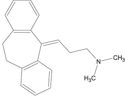
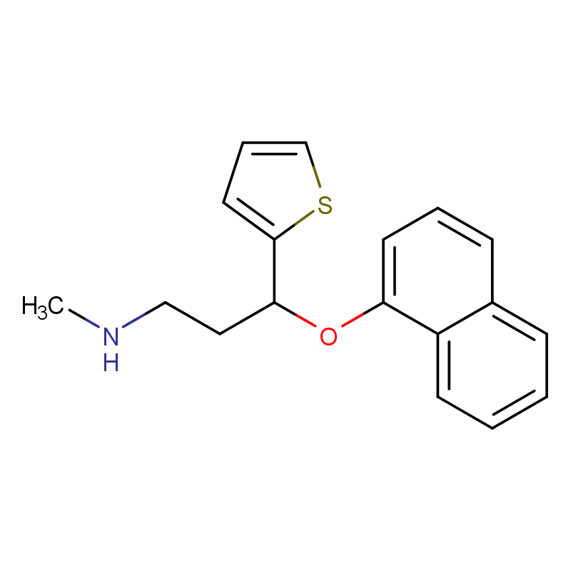

El Amitriptilina y la Duloxetina atraviesan la barrera hematoencefálica y actúan principalmente sobre neuronas de sistemas serotoninérgicos y noradrenérgicos en el sistema nervioso central.
Ambos fármacos inhiben los transportadores de recaptación de serotonina (SERT) y noradrenalina (NET) en la membrana presináptica, disminuyendo el retorno de estos neurotransmisores hacia la neurona. Como consecuencia, aumentan su concentración en la hendidura sináptica y prolongan su acción sobre los receptores postsinápticos.
La amitriptilina, además, presenta menor selectividad, ya que también puede antagonizar receptores muscarínicos, histaminérgicos (H1) y alfa-adrenérgicos, lo que explica muchos de sus efectos adversos. La duloxetina, en cambio, es más selectiva sobre SERT y NET, con menor afinidad por otros receptores.
El aumento de serotonina y noradrenalina potencia la neurotransmisión en circuitos relacionados con el estado de ánimo y también en vías descendentes inhibitorias del dolor, lo que explica su utilidad en depresión y dolor neuropático.
Como resultado final, ambos actúan como inhibidores de la recaptación de serotonina y noradrenalina, aumentando su disponibilidad sináptica y potenciando la actividad neuronal en circuitos específicos.
La Amitriptilina y la Duloxetina son inhibidores de la recaptación de serotonina y noradrenalina, bloquean SERT y NET, aumentan la concentración de estos neurotransmisores en la sinapsis y prolongan su efecto. Es decir, incrementan la neurotransmisión serotoninérgica y noradrenérgica, mejoran el estado de ánimo y potencian las vías inhibitorias del dolor, con la amitriptilina siendo menos selectiva y la duloxetina más específica.
Audio explicativo
Material visual

